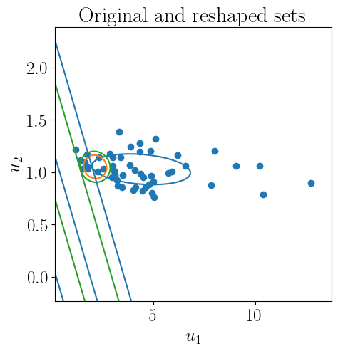

[2]:
import cvxpy as cp
import scipy as sc
import numpy as np
import numpy.random as npr
import torch
from sklearn import datasets
import pandas as pd
import lro
import matplotlib.pyplot as plt
import warnings
import seaborn
import imageio
warnings.filterwarnings("ignore")
plt.rcParams.update({
"text.usetex":True,
"font.size":18,
"font.family": "serif"
})
colors = ["tab:blue", "tab:green", "tab:orange",
"tab:red", "tab:purple", "tab:brown", "tab:pink", "tab:grey", "tab:olive"]
Example 3: Max of affine uncertainty#
We consider a problem with max of affine uncertainty,
\[g(u,x) = \max_{l=1,\dots,L} (P_lu + a_l)^Tx,\]
where \(P_l\) and \(a_l\) are constants for all \(l = 1, \dots, L\). The robust formulation is
\[\begin{split}\begin{array}{ll}
\text{minimize} & \tau\\
\text{subject to} & \max_{l=1,\dots,L} (P_lu + a_l)^Tx \leq \tau \quad \forall u \in \mathcal{U}(\theta)\\
& x \geq 0,
\end{array}\end{split}\]
where \(\theta\) encodes the training parameters \((A,b)\).
[3]:
# Formulate constants
n = 2
N = 50
# k = npr.uniform(1,4,n)
# p = k + npr.uniform(2,5,n)
k = np.array([2.,3.])
p = np.array([3,4.5])
k_tch = torch.tensor(k, requires_grad = True)
p_tch = torch.tensor(p, requires_grad = True)
# Formulate loss function
def loss(t,x, data,l = 5):
return t + l*torch.mean(torch.maximum(
torch.maximum(k_tch@x -data@p_tch, k_tch@x - p_tch@x) - t,
torch.tensor(0.,requires_grad = True))), t, torch.mean(torch.maximum(
torch.maximum(k_tch@x -data@p_tch, k_tch@x - p_tch@x) - t,
torch.tensor(0.,requires_grad = True)))
def gen_demand(n, N):
np.random.seed(7)
F = np.random.normal(size = (n,2))
sig = 0.1*F@(F.T)
mu = np.random.uniform(-0.2,3,n)
norms = np.random.multivariate_normal(mu,sig, N)
d_train = np.exp(norms)
return d_train
# Generate data
data = gen_demand(n,N)
Plot Data#
[4]:
plt.scatter(data[:,0],data[:,1])
[4]:
<matplotlib.collections.PathCollection at 0x7f9d897a2770>

Train relevant sets#
[4]:
n = 2
# Formulate uncertainty set
u = lro.UncertainParameter(n,
uncertainty_set=lro.Ellipsoidal(p=2,
data=data, loss = loss))
# Formulate the Robust Problem
x_r = cp.Variable(n)
t = cp.Variable()
objective = cp.Minimize(t)
constraints = [cp.maximum(k@x_r - p@x_r, k@x_r - p@u) <= t]
constraints += [x_r >= 0]
prob = lro.RobustProblem(objective, constraints)
s = 13
# # Train only epsilon
result = prob.train(eps = True, lr = 0.001, step=50, momentum = 0.8, optimizer = "SGD", initeps = 1, seed = s)
df_eps = result.df
# # Train A and b
init_A = sc.linalg.sqrtm(sc.linalg.inv(np.cov(data.T)))
init_b = -init_A@np.mean(data, axis=0)
# Train A and b
result1 = prob.train(lr = 0.001, step=250, momentum = 0.8, optimizer = "SGD", seed = s, initA = init_A, initb = init_b, save_iters = True)
df1 = result1.df
A_fin = result1.A
b_fin = result1.b
A1_iters, b1_iters = result1.uncset_iters
result2 = prob.train(eps = True, lr = 0.001, step=50, momentum = 0.8, optimizer = "SGD", seed = s, initA = A_fin, initb = b_fin, save_iters = True)
df_r1 = result2.df
A_fin_2 = result2.A
b_fin_2 = result2.b
result3 = prob.train(eps = True, lr = 0.001, step=50, momentum = 0.8, optimizer = "SGD", seed = s, initA = init_A, initb = init_b)
df_r2 = result3.df
# Grid search epsilon
result4 = prob.grid(epslst = np.linspace(0.01, 3, 40), initA = init_A, initb = init_b, seed = s)
dfgrid = result4.df
[11]:
fig, (ax1, ax2) = plt.subplots(1, 2, figsize=(15, 4))
ax1.plot((df_r2['A_norm']), df_r2['Violations'], color="tab:blue", label=r"Original set")
ax1.plot((df_r1['A_norm']), df_r1['Violations'], color="tab:orange", label="Reshaped set")
# ax1.set_yscale("log")
ax1.set_xlabel("Size parameter $\epsilon$")
ax1.set_ylabel("Value of constraint violation")
ax2.plot(df_r2['Violations'][:], df_r2['Opt_val'][:], color="tab:blue", label=r"Original set")
ax2.plot(df_r1['Violations'],df_r1['Opt_val'], color="tab:orange", label="Reshaped set")
ax2.plot(df1['Violations'],df1['Opt_val'], color="tab:green", label="Partially reshaped set")
ax2.set_ylabel("Objective valye")
# ax2.set_xlim([-1,20])
ax2.set_xlabel("Value of constraint violation")
lgd = ax2.legend(loc = "lower right", bbox_to_anchor=(1.5, 0.3))
plt.savefig("tradeoff_curves.pdf", bbox_extra_artists=(lgd,), bbox_inches='tight')

Solve for final values#
[19]:
def final_solve(A_final, b_final):
n = 2
u = lro.UncertainParameter(n,
uncertainty_set=lro.Ellipsoidal(p=2,
A = A_final, b = b_final))
# Formulate the Robust Problem
x_r = cp.Variable(n)
t = cp.Variable()
objective = cp.Minimize(t)
constraints = [cp.maximum(k@x_r - p@x_r, k@x_r - p@u) <= t]
constraints += [x_r >= 0]
prob = lro.RobustProblem(objective, constraints)
prob.solve()
# result3.reform_problem.solve()
x_final = x_r.value
t_final = t.value
return x_final, t_final
x_opt_learned_2, t_opt_learned_2 = final_solve(A_fin_2, b_fin_2)
x_opt_learned, t_opt_learned = final_solve(A_fin, b_fin)
x_opt_base, t_opt_base = final_solve(init_A, init_b)
print("base x,t =", x_opt_base, t_opt_base)
print("optimal x,t =", x_opt_learned, t_opt_learned)
print("after eps train optimal x,t =", x_opt_learned_2, t_opt_learned_2)
---------------------------------------------------------------------------
ValueError Traceback (most recent call last)
Cell In [19], line 25
22 return x_final, t_final
24 x_opt_learned_2, t_opt_learned_2 = final_solve(A_fin_2, b_fin_2)
---> 25 x_opt_learned, t_opt_learned = final_solve(A_fin, b_fin)
26 x_opt_base, t_opt_base = final_solve(init_A, init_b)
28 print("base x,t =", x_opt_base, t_opt_base)
Cell In [19], line 17, in final_solve(A_final, b_final)
14 constraints += [x_r >= 0]
16 prob = lro.RobustProblem(objective, constraints)
---> 17 prob.solve()
18 # result3.reform_problem.solve()
19 x_final = x_r.value
File ~/Desktop/colbeck/Bartolomeo Research/lro/lro/robust_problem.py:638, in RobustProblem.solve(self, solver)
636 _ = self.train()
637 return self.new_prob.solve(solver=solver)
--> 638 prob = self.dualize_constraints()
639 # unc_reductions = []
640 # if type(self.objective) == Maximize:
641 # unc_reductions += [FlipObjective()]
642 # unc_reductions += [RemoveUncertainParameters()]
643 # newchain = UncertainChain(self, reductions=unc_reductions)
644 # prob, _ = newchain.apply(self)
645 return prob.solve(solver=solver)
File ~/Desktop/colbeck/Bartolomeo Research/lro/lro/robust_problem.py:621, in RobustProblem.dualize_constraints(self)
619 unc_reductions += [RemoveUncertainParameters()]
620 newchain = UncertainChain(self, reductions=unc_reductions)
--> 621 prob, _ = newchain.apply(self)
622 return prob
623 return super(RobustProblem, self)
File ~/Desktop/colbeck/Bartolomeo Research/lro/lro/uncertain_canon/uncertain_chain.py:80, in UncertainChain.apply(self, problem, verbose)
78 if verbose:
79 s.LOGGER.info('Applying reduction %s', type(r).__name__)
---> 80 problem, inv = r.apply(problem)
81 inverse_data.append(inv)
82 return problem, inverse_data
File ~/Desktop/colbeck/Bartolomeo Research/lro/lro/remove_uncertain/remove_uncertain.py:24, in RemoveUncertainParameters.apply(self, problem)
22 if not self.accepts(problem):
23 raise ValueError("Cannot canonicalize uncertain problem atoms.")
---> 24 return super(RemoveUncertainParameters, self).apply(problem)
File ~/Desktop/colbeck/Bartolomeo Research/lro/lro/uncertain_canon/uncertain_canonicalization.py:90, in Uncertain_Canonicalization.apply(self, problem)
87 canon_constraints += aux_constr + [canon_constr]
89 for new_cons_idx in range(1, len(unc_lst)):
---> 90 canon_constr, aux_constr, new_lmda = self.remove_uncertainty(
91 unc_lst[new_cons_idx], unc_params[0], std_lst[new_cons_idx], element_shape)
92 canon_constraints += aux_constr + [canon_constr]
94 if type(unc_params[0].uncertainty_set) == Budget:
File ~/Desktop/colbeck/Bartolomeo Research/lro/lro/uncertain_canon/uncertain_canonicalization.py:233, in Uncertain_Canonicalization.remove_uncertainty(self, unc_lst, uvar, std_lst, num_constr)
231 else:
232 aux_constraint += [z_cons == -z_unc[0]]
--> 233 new_expr, new_constraint, lmbda = uvar.conjugate(z_unc, num_constr, k_ind=0)
234 aux_expr = aux_expr + new_expr
235 aux_constraint = aux_constraint + new_constraint
File ~/Desktop/colbeck/Bartolomeo Research/lro/lro/uncertain.py:27, in UncertainParameter.conjugate(self, var, shape, k_ind)
25 def conjugate(self, var, shape, k_ind):
26 """Reformulate uncertainty set"""
---> 27 return self.uncertainty_set.conjugate(var, shape, k_ind)
File ~/Desktop/colbeck/Bartolomeo Research/lro/lro/uncertainty_sets/norm.py:181, in Norm.conjugate(self, var, shape, k_ind)
179 lmbda = Variable()
180 constr = [norm(newvar, p=self.dual_norm()) <= lmbda]
--> 181 constr += [self.paramT.T@newvar == var[0]]
182 constr += [lmbda >= 0]
183 return self.rho * lmbda - newvar*self.paramb, constr, lmbda
File ~/miniconda3/envs/lro/lib/python3.10/site-packages/cvxpy/expressions/expression.py:731, in Expression.__array_ufunc__(self, ufunc, method, *args, **kwargs)
727 ufunc_handler = __BINARY_EXPRESSION_UFUNCS__[ufunc]
728 if kwargs == {} and \
729 len(args) == 2 and \
730 args[1] is self:
--> 731 return ufunc_handler(self, args[0])
732 except KeyError:
733 pass
File ~/miniconda3/envs/lro/lib/python3.10/site-packages/cvxpy/expressions/expression.py:75, in <lambda>(self, a)
56 __STAR_MATMUL_WARNING__ = """
57 This use of ``*`` has resulted in matrix multiplication.
58 Using ``*`` for matrix multiplication has been deprecated since CVXPY 1.1.
(...)
62 This code path has been hit %s times so far.
63 """
65 __NUMPY_UFUNC_ERROR__ = """
66 You're calling a NumPy function on a CVXPY expression. This is prone to causing
67 errors or code that doesn't behave as expected. Consider using one of the
68 functions documented here: https://www.cvxpy.org/tutorial/functions/index.html
69 """
70 __BINARY_EXPRESSION_UFUNCS__ = {
71 np.add: lambda self, a: self.__radd__(a),
72 np.subtract: lambda self, a: self.__rsub__(a),
73 np.multiply: lambda self, a: self.__rmul__(a),
74 np.divide: lambda self, a: self.__rdiv__(a),
---> 75 np.matmul: lambda self, a: self.__rmatmul__(a),
76 np.power: lambda self, a: self.__rpow__(a),
77 np.left_shift: lambda self, a: self.__rlshift__(a),
78 np.right_shift: lambda self, a: self.__rrshift__(a),
79 np.equal: lambda self, a: self.__eq__(a),
80 # <= and >= are backwards because this is only called for code of the
81 # form ndarray <= Expression
82 np.less_equal: lambda self, a: self.__ge__(a),
83 np.greater_equal: lambda self, a: self.__le__(a),
84 np.less: lambda self, a: self.__gt__(a),
85 np.greater: lambda self, a: self.__lt__(a),
86 }
89 class Expression(u.Canonical):
90 """A mathematical expression in a convex optimization problem.
91
92 Overloads many operators to allow for convenient creation of compound
93 expressions (e.g., the sum of two expressions) and constraints.
94 """
File ~/miniconda3/envs/lro/lib/python3.10/site-packages/cvxpy/expressions/expression.py:50, in _cast_other.<locals>.cast_op(self, other)
47 """A wrapped binary operator that can handle non-Expression arguments.
48 """
49 other = self.cast_to_const(other)
---> 50 return binary_op(self, other)
File ~/miniconda3/envs/lro/lib/python3.10/site-packages/cvxpy/expressions/expression.py:661, in Expression.__rmatmul__(self, other)
659 if self.shape == () or other.shape == ():
660 raise ValueError("Scalar operands are not allowed, use '*' instead")
--> 661 return cvxtypes.matmul_expr()(other, self)
File ~/miniconda3/envs/lro/lib/python3.10/site-packages/cvxpy/atoms/affine/binary_operators.py:50, in BinaryOperator.__init__(self, lh_exp, rh_exp)
49 def __init__(self, lh_exp, rh_exp) -> None:
---> 50 super(BinaryOperator, self).__init__(lh_exp, rh_exp)
File ~/miniconda3/envs/lro/lib/python3.10/site-packages/cvxpy/atoms/atom.py:51, in Atom.__init__(self, *args)
49 self.args = [Atom.cast_to_const(arg) for arg in args]
50 self.validate_arguments()
---> 51 self._shape = self.shape_from_args()
52 if len(self._shape) > 2:
53 raise ValueError("Atoms must be at most 2D.")
File ~/miniconda3/envs/lro/lib/python3.10/site-packages/cvxpy/atoms/affine/binary_operators.py:120, in MulExpression.shape_from_args(self)
117 def shape_from_args(self) -> Tuple[int, ...]:
118 """Returns the (row, col) shape of the expression.
119 """
--> 120 return u.shape.mul_shapes(self.args[0].shape, self.args[1].shape)
File ~/miniconda3/envs/lro/lib/python3.10/site-packages/cvxpy/utilities/shape.py:144, in mul_shapes(lh_shape, rh_shape)
142 lh_old = lh_shape
143 rh_old = rh_shape
--> 144 lh_shape, rh_shape, shape = mul_shapes_promote(lh_shape, rh_shape)
145 if lh_shape != lh_old:
146 shape = shape[1:]
File ~/miniconda3/envs/lro/lib/python3.10/site-packages/cvxpy/utilities/shape.py:110, in mul_shapes_promote(lh_shape, rh_shape)
108 rh_mat_shape = rh_shape[-2:]
109 if lh_mat_shape[1] != rh_mat_shape[0]:
--> 110 raise ValueError("Incompatible dimensions %s %s" % (
111 lh_shape, rh_shape))
112 if lh_shape[:-2] != rh_shape[:-2]:
113 raise ValueError("Incompatible dimensions %s %s" % (
114 lh_shape, rh_shape))
ValueError: Incompatible dimensions (2, 8) (2, 1)
[ ]:
[14]:
# Populate Z Values (a 7x7 matrix) - For a circle x^2+y^2=z
offset = 1
x_min, x_max = np.min(data[:,0]) - offset, np.max(data[:,0]) + offset
y_min, y_max = np.min(data[:,1]) - offset, np.max(data[:,1]) + offset
n_points = 100
X = np.linspace(x_min,x_max,n_points)
Y = np.linspace(y_min,y_max,n_points)
x_mesh,y_mesh = np.meshgrid(X,Y)
def level_set(A_final, b_final, offset = 2, n = n_points, x_mesh = x_mesh, y_mesh = y_mesh):
x_opt, t_opt = final_solve(A_final, b_final)
unc_level_set = np.zeros((n,n))
g_level_set = np.zeros((n,n))
for i in range(n):
for j in range(n):
u_vec = [x_mesh[i,j], y_mesh[i,j]]
unc_level_set[i,j] = np.linalg.norm(A_final @ u_vec + b_final)
g_level_set[i,j] = np.maximum(k @ x_opt - p @ x_opt, k @ x_opt - p @ u_vec) - t_opt
return unc_level_set, g_level_set
unc_level_learned_2, g_level_learned_2 = level_set(A_fin_2, b_fin_2)
unc_level_learned, g_level_learned = level_set(A_fin, b_fin)
unc_level_base, g_level_base = level_set(init_A, init_b)
plt.figure(figsize=(5, 5))
plt.title("Original and reshaped sets")
# Set axis label for the contour plot
plt.xlabel(r"$u_1$")
plt.ylabel(r"$u_2$")
plt.contour(x_mesh,y_mesh,unc_level_base, [1], colors = ["tab:blue"], label = "initial sets")
plt.contour(x_mesh,y_mesh,unc_level_learned, [1], colors = ["tab:green"], label = "initial train A,b")
plt.contour(x_mesh,y_mesh,unc_level_learned_2, [1], colors = ["tab:orange"], label = "final train")
# plt.pcolormesh(x_mesh, y_mesh,g_level_learned)
plt.contour(x_mesh,y_mesh,g_level_learned, [0, 5, 10], colors = ["tab:green"])
plt.contour(x_mesh,y_mesh,g_level_base, [0, 5, 10], colors = ["tab:blue"])
plt.scatter(data[:,0],data[:,1])
# plt.savefig("Reshaped_ctrs.pdf", bbox_inches='tight')
# plt.legend(loc = "upper center")
plt.show()

[10]:
import os
import imageio
filenames = []
for i in range(len(A1_iters)):
unc_level, g_level = level_set(A1_iters[i], b1_iters[i])
plt.figure(figsize=(5, 5))
plt.title("Original and reshaped sets")
# Set axis label for the contour plot
plt.xlabel(r"$u_1$")
plt.ylabel(r"$u_2$")
plt.contour(x_mesh,y_mesh,unc_level_base, [1], colors = ["tab:blue"], label = "initial sets")
plt.contour(x_mesh,y_mesh,unc_level, [1], colors = ["tab:orange"], label = "final train")
plt.contour(x_mesh,y_mesh,unc_level_learned, [1], colors = ["tab:green"], label = "initial train A,b")
filename = f'gif_images/{i}.png'
filenames.append(filename)
plt.scatter(data[:,0],data[:,1])
plt.savefig(filename)
plt.close()
with imageio.get_writer('mygif4.gif', mode='I') as writer:
for filename in filenames:
image = imageio.imread(filename)
writer.append_data(image)
---------------------------------------------------------------------------
KeyboardInterrupt Traceback (most recent call last)
Cell In [10], line 21
18 filenames.append(filename)
20 plt.scatter(data[:,0],data[:,1])
---> 21 plt.savefig(filename)
22 plt.close()
24 with imageio.get_writer('mygif4.gif', mode='I') as writer:
File ~/miniconda3/envs/lro/lib/python3.10/site-packages/matplotlib/pyplot.py:955, in savefig(*args, **kwargs)
953 fig = gcf()
954 res = fig.savefig(*args, **kwargs)
--> 955 fig.canvas.draw_idle() # Need this if 'transparent=True', to reset colors.
956 return res
File ~/miniconda3/envs/lro/lib/python3.10/site-packages/matplotlib/backend_bases.py:2054, in FigureCanvasBase.draw_idle(self, *args, **kwargs)
2052 if not self._is_idle_drawing:
2053 with self._idle_draw_cntx():
-> 2054 self.draw(*args, **kwargs)
File ~/miniconda3/envs/lro/lib/python3.10/site-packages/matplotlib/backends/backend_agg.py:405, in FigureCanvasAgg.draw(self)
401 # Acquire a lock on the shared font cache.
402 with RendererAgg.lock, \
403 (self.toolbar._wait_cursor_for_draw_cm() if self.toolbar
404 else nullcontext()):
--> 405 self.figure.draw(self.renderer)
406 # A GUI class may be need to update a window using this draw, so
407 # don't forget to call the superclass.
408 super().draw()
File ~/miniconda3/envs/lro/lib/python3.10/site-packages/matplotlib/artist.py:74, in _finalize_rasterization.<locals>.draw_wrapper(artist, renderer, *args, **kwargs)
72 @wraps(draw)
73 def draw_wrapper(artist, renderer, *args, **kwargs):
---> 74 result = draw(artist, renderer, *args, **kwargs)
75 if renderer._rasterizing:
76 renderer.stop_rasterizing()
File ~/miniconda3/envs/lro/lib/python3.10/site-packages/matplotlib/artist.py:51, in allow_rasterization.<locals>.draw_wrapper(artist, renderer)
48 if artist.get_agg_filter() is not None:
49 renderer.start_filter()
---> 51 return draw(artist, renderer)
52 finally:
53 if artist.get_agg_filter() is not None:
File ~/miniconda3/envs/lro/lib/python3.10/site-packages/matplotlib/figure.py:3071, in Figure.draw(self, renderer)
3068 # ValueError can occur when resizing a window.
3070 self.patch.draw(renderer)
-> 3071 mimage._draw_list_compositing_images(
3072 renderer, self, artists, self.suppressComposite)
3074 for sfig in self.subfigs:
3075 sfig.draw(renderer)
File ~/miniconda3/envs/lro/lib/python3.10/site-packages/matplotlib/image.py:131, in _draw_list_compositing_images(renderer, parent, artists, suppress_composite)
129 if not_composite or not has_images:
130 for a in artists:
--> 131 a.draw(renderer)
132 else:
133 # Composite any adjacent images together
134 image_group = []
File ~/miniconda3/envs/lro/lib/python3.10/site-packages/matplotlib/artist.py:51, in allow_rasterization.<locals>.draw_wrapper(artist, renderer)
48 if artist.get_agg_filter() is not None:
49 renderer.start_filter()
---> 51 return draw(artist, renderer)
52 finally:
53 if artist.get_agg_filter() is not None:
File ~/miniconda3/envs/lro/lib/python3.10/site-packages/matplotlib/axes/_base.py:3107, in _AxesBase.draw(self, renderer)
3104 a.draw(renderer)
3105 renderer.stop_rasterizing()
-> 3107 mimage._draw_list_compositing_images(
3108 renderer, self, artists, self.figure.suppressComposite)
3110 renderer.close_group('axes')
3111 self.stale = False
File ~/miniconda3/envs/lro/lib/python3.10/site-packages/matplotlib/image.py:131, in _draw_list_compositing_images(renderer, parent, artists, suppress_composite)
129 if not_composite or not has_images:
130 for a in artists:
--> 131 a.draw(renderer)
132 else:
133 # Composite any adjacent images together
134 image_group = []
File ~/miniconda3/envs/lro/lib/python3.10/site-packages/matplotlib/artist.py:51, in allow_rasterization.<locals>.draw_wrapper(artist, renderer)
48 if artist.get_agg_filter() is not None:
49 renderer.start_filter()
---> 51 return draw(artist, renderer)
52 finally:
53 if artist.get_agg_filter() is not None:
File ~/miniconda3/envs/lro/lib/python3.10/site-packages/matplotlib/spines.py:287, in Spine.draw(self, renderer)
284 @allow_rasterization
285 def draw(self, renderer):
286 self._adjust_location()
--> 287 ret = super().draw(renderer)
288 self.stale = False
289 return ret
File ~/miniconda3/envs/lro/lib/python3.10/site-packages/matplotlib/artist.py:51, in allow_rasterization.<locals>.draw_wrapper(artist, renderer)
48 if artist.get_agg_filter() is not None:
49 renderer.start_filter()
---> 51 return draw(artist, renderer)
52 finally:
53 if artist.get_agg_filter() is not None:
File ~/miniconda3/envs/lro/lib/python3.10/site-packages/matplotlib/patches.py:589, in Patch.draw(self, renderer)
587 tpath = transform.transform_path_non_affine(path)
588 affine = transform.get_affine()
--> 589 self._draw_paths_with_artist_properties(
590 renderer,
591 [(tpath, affine,
592 # Work around a bug in the PDF and SVG renderers, which
593 # do not draw the hatches if the facecolor is fully
594 # transparent, but do if it is None.
595 self._facecolor if self._facecolor[3] else None)])
File ~/miniconda3/envs/lro/lib/python3.10/site-packages/matplotlib/patches.py:574, in Patch._draw_paths_with_artist_properties(self, renderer, draw_path_args_list)
571 renderer = PathEffectRenderer(self.get_path_effects(), renderer)
573 for draw_path_args in draw_path_args_list:
--> 574 renderer.draw_path(gc, *draw_path_args)
576 gc.restore()
577 renderer.close_group('patch')
File ~/miniconda3/envs/lro/lib/python3.10/site-packages/matplotlib/backends/backend_agg.py:146, in RendererAgg.draw_path(self, gc, path, transform, rgbFace)
144 else:
145 try:
--> 146 self._renderer.draw_path(gc, path, transform, rgbFace)
147 except OverflowError:
148 cant_chunk = ''
KeyboardInterrupt:

MRO set#
[17]:
n = 2
N = 50
# k = npr.uniform(1,4,n)
# p = k + npr.uniform(2,5,n)
k = np.array([2.,3.])
p = np.array([3,4.5])
k_tch = torch.tensor(k, requires_grad = True)
p_tch = torch.tensor(p, requires_grad = True)
b = npr.uniform(1,3,2)
Define Problem Structure#
[6]:
K = 3
u = lro.UncertainParameter(n,
uncertainty_set=lro.MRO(K = K, p=2,
data=data, loss = loss, uniqueA = True))
Astart = u.uncertainty_set._initA
# Formulate the Robust Problem
x_r = cp.Variable(n)
t = cp.Variable()
objective = cp.Minimize(t)
constraints = [cp.maximum(k@x_r - p@x_r, k@x_r - p@u) <= t]
constraints += [x_r >= 0]
prob = lro.RobustProblem(objective, constraints)
Solve Problem#
[18]:
s = 13
# init = sc.linalg.sqrtm(sc.linalg.inv(np.cov(data.T)))
# init_b = -init@np.mean(data, axis=0)
init = np.eye(2)
b = -init@np.mean(data, axis=0)
# Train A and b
result1 = prob.train(lr = 0.001, step=100, momentum = 0.8, optimizer = "SGD", seed = s, initA = init, initb = None, fixb = False, save_iters = True)
df1 = result1.df
A_fin = result1.A
b_fin = result1.b
A1_iters, b1_iters = result1.uncset_iters
[19]:
def solve_mro(A_in, data_in = data):
K_in = (int) (A_in.shape[0] / A_in.shape[1])
n = 2
u = lro.UncertainParameter(n,
uncertainty_set=lro.MRO(p=2,K = K_in,
A = A_in,data = data_in, train = False, uniqueA = True))
# Formulate the Robust Problem
x_r = cp.Variable(n)
t = cp.Variable()
objective = cp.Minimize(t)
constraints = [cp.maximum(k@x_r - p@x_r, k@x_r - p@u) <= t]
constraints += [x_r >= 0]
prob = lro.RobustProblem(objective, constraints)
prob.solve()
# result3.reform_problem.solve()
x_opt = x_r.value
t_opt = t.value
return x_opt, t_opt
[11]:
x_opt_base, t_opt_base = solve_mro(Astart)
x_opt_learned, t_opt_learned = solve_mro(A_fin)
[14]:
offset = 1
x_min, x_max = np.min(data[:,0]) - offset, np.max(data[:,0]) + offset
y_min, y_max = np.min(data[:,1]) - offset, np.max(data[:,1]) + offset
n_points = 100
X = np.linspace(x_min,x_max,n_points)
Y = np.linspace(y_min,y_max,n_points)
x_mesh,y_mesh = np.meshgrid(X,Y)
# Z values as a matrix
def mro_level_sets(A, offset = 2, num_p = n_points, x_mesh = x_mesh, y_mesh = y_mesh):
x_opt, t_opt = solve_mro(A)
unc_set = {}
K = (int) (A.shape[0] / A.shape[1])
for k_ind in range(K):
unc_set[k_ind] = np.zeros((num_p,num_p))
# init_set = np.zeros((num_p,num_p))
g_level= np.zeros((num_p,num_p))
# Populate Z Values (a 7x7 matrix) - For a circle x^2+y^2=z
for i in range(num_p):
for j in range(num_p):
u_vec = [x_mesh[i,j], y_mesh[i,j]]
for k_ind in range(K):
unc_set[k_ind][i,j] = np.linalg.norm(A[k_ind*n:(k_ind+1)*n, 0:n]@ u_vec - A[k_ind*n:(k_ind+1)*n, 0:n]@u.uncertainty_set.Dbar[k_ind])
g_level[i,j] = np.maximum(k @ x_opt - p @ x_opt_base, k @ x_opt - p @ u_vec)
return unc_set, g_level
[20]:
fin_set, g_level_learned = mro_level_sets(A_fin)
init_set, g_level_init = mro_level_sets(Astart)
plt.figure(figsize=(5, 5))
plt.title("Original and reshaped sets")
# Set x axis label for the contour plot
plt.xlabel(r"$u_1$")
# Set y axis label for the contour plot
plt.ylabel(r"$u_2$")
# plt.ylim(-20,40)
# plt.xlim(-20,40)
for k_ind in range(K):
plt.contour(x_mesh,y_mesh,fin_set[k_ind], [1], colors = ["tab:orange"])
for k_ind in range(K):
plt.contour(x_mesh,y_mesh,init_set[k_ind], [1], colors = ["tab:blue"])
# a = plt.contour(x_mesh,y_mesh,g_level_learned, np.arange(-10,12,5), colors = ["tab:orange"], alpha = 0.8)
# b = plt.contour(x_mesh,y_mesh,g_level_init, np.arange(-10,12,5), colors = ["tab:blue"],alpha = 0.8)
# plt.clabel(a, a.levels, inline=True, fmt=fmt, fontsize=18)
# plt.clabel(b, b.levels, inline=True, fmt=fmt, fontsize=18)
plt.scatter(data[:,0],data[:,1])
plt.scatter(u.uncertainty_set.Dbar[:,0], u.uncertainty_set.Dbar[:,1])
plt.savefig("Reshaped1.pdf", bbox_inches='tight')
plt.show()
[16]:
import os
import imageio
filenames = []
for i in range(len(A1_iters)):
unc_level, g_level = mro_level_sets(A1_iters[i])
plt.figure(figsize=(5, 5))
plt.title("Original and reshaped sets")
# Set axis label for the contour plot
plt.xlabel(r"$u_1$")
plt.ylabel(r"$u_2$")
for k_ind in range(K):
plt.contour(x_mesh,y_mesh,fin_set[k_ind], [1], colors = ["tab:orange"])
plt.contour(x_mesh,y_mesh,init_set[k_ind], [1], colors = ["tab:blue"])
plt.contour(x_mesh,y_mesh,unc_level[k_ind], [1], colors = ["tab:green"])
filename = f'gif_images/{i}.png'
filenames.append(filename)
plt.scatter(data[:,0],data[:,1])
plt.scatter(u.uncertainty_set.Dbar[:,0], u.uncertainty_set.Dbar[:,1])
plt.savefig(filename)
plt.close()
with imageio.get_writer('mro.gif', mode='I') as writer:
for filename in filenames:
image = imageio.imread(filename)
writer.append_data(image)
[ ]:
[ ]:
[ ]:
[ ]:
[114]:
# Formulate constants
n = 2
N = 50
# k = npr.uniform(1,4,n)
# p = k + npr.uniform(2,5,n)
k = np.array([2.,3.])
p = np.array([3,4.5])
k_tch = torch.tensor(k, requires_grad = True)
p_tch = torch.tensor(p, requires_grad = True)
# Formulate loss function
def loss(t,x, data,l = 5):
return t + l*torch.mean(torch.maximum(
torch.maximum(k_tch@x -data@p_tch, k_tch@x - p_tch@x) - t,
torch.tensor(0.,requires_grad = True))), t, torch.mean(torch.maximum(
torch.maximum(k_tch@x -data@p_tch, k_tch@x - p_tch@x) - t,
torch.tensor(0.,requires_grad = True)))
def gen_demand(n, N):
np.random.seed(2)
F = np.random.normal(size = (n,2))
sig = 0.1*F@(F.T)
mu = np.random.uniform(-0.2,3,n)
norms = np.random.multivariate_normal(mu,sig, N)
d_train = np.exp(norms)
return d_train
# Generate data
data = gen_demand(n,N)
[ ]: